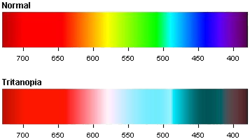

Tritanopia
| En este tipo de daltonismo, los conos azules (de longitud de onda corta) se ven afectados . Este tipo se agrupa con la tritanomalia, donde los conos azules están presentes, pero están defectuosos, en diversos grados de gravedad, afectando la capacidad de distinguir ciertos colores de mayor manera. |
 |

Este es generalmente referido como "daltonismo azul-amarillo", sin embargo este término no es totalmente adecuado, ya que las personas afectadas por el daltonismo tritán confunden el azul con el verde y el amarillo con el violeta. Por lo tanto, el término "daltonismo azul-verde" sería más preciso, ya que los tritanopes no suelen confundir el azul y amarillo.
Diferentes estudios difieren mucho en las cifras, pero como regla general, se podría decir que una de cada 10.000 personas se ve afectada como máximo. A diferencia del daltonismo rojo-verde, los defectos tritan son autosómicos y están codificados en el cromosoma 7. Esto significa que la tritanopía y la tritanomalía no son rasgos ligados al sexo y, por lo tanto, las mujeres y los hombres se ven afectados por igual.
| Es interesante mencionar que los tritanopes suelen tener menos problemas para realizar tareas cotidianas
que aquellos con daltonismo rojo-verde. Muchos concluyen que esto se debe a que nuestra sociedad asocia el
verde con el bien/avanzar y el rojo con el mal/parar, dos colores vitales para casos de seguridad.
Lea sobre los demás tipos de daltonismo: Protanopia, Deuteranopia y Tritanopia. |